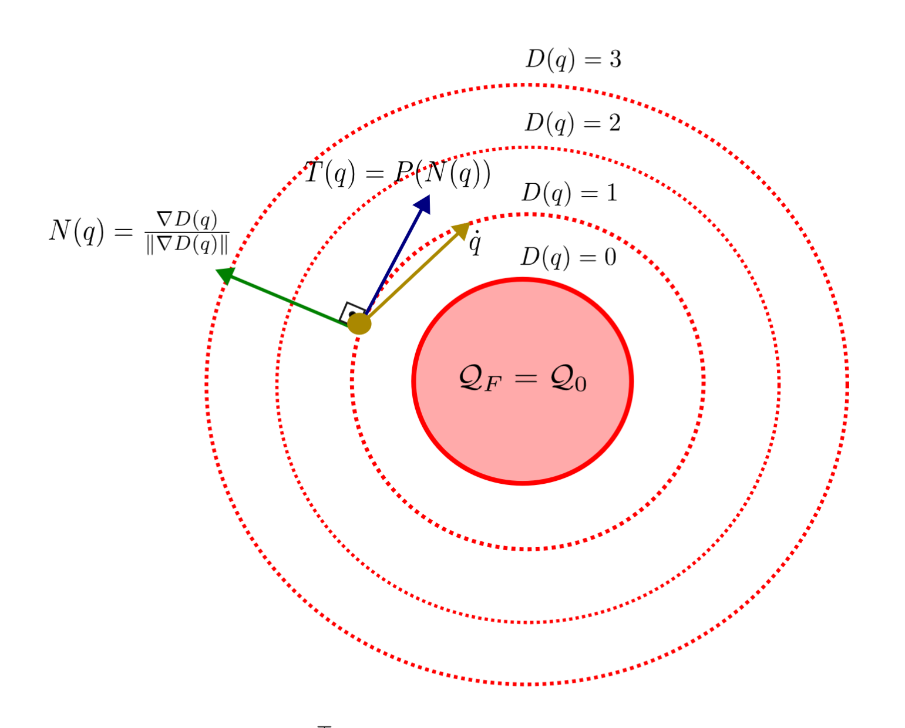
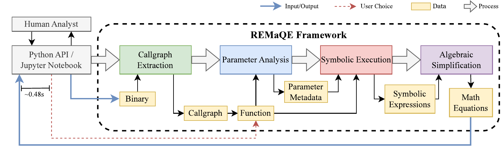
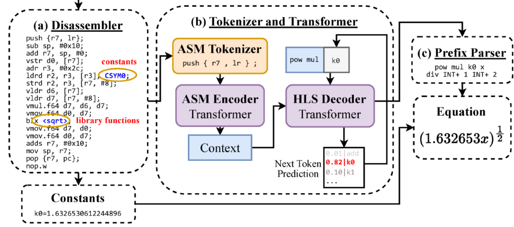

Control/Robotics Research Laboratory
The Control/Robotics Research Laboratory (CRRL) advances resilient autonomy through a synthesis of nonlinear control, certifiable machine learning, and cyber-physical systems security. We develop general principles and algorithms that provide safety, robustness, and assurance for modern robotic platforms, including legged robots, robotic arms, and interactive human-robot systems. Our work emphasizes rigorous guarantees, rooted in Lyapunov analysis, control-barrier methods, and structured learning models, while grounding theory in deployable, experimentally validated systems. Through this integration, CRRL aims to establish reliable foundations for autonomous agents operating in complex, dynamic environments.
Research Areas
Robotics
Perception • World Models • VLA • CBF

Systems & Control
Nonlinear Control • Hybrid Systems • Safety
Secure Cyber-Physical Systems
Network security • Threat Detection • Anomaly Detection • Critical Infrastructure Security
Trustworthy & Resilient AI
Adversarial attacks & Detection • Secure Learning • Certifiable Defenses
